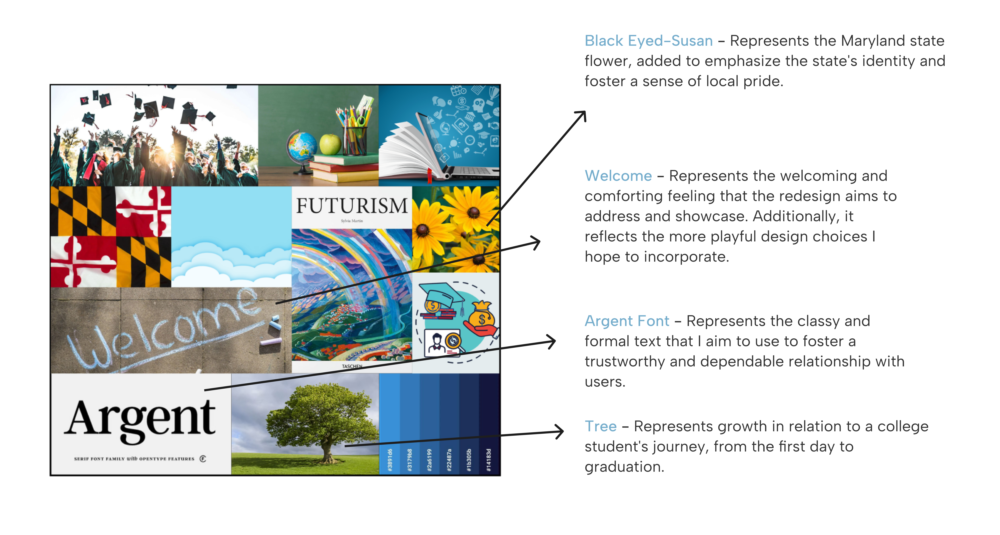
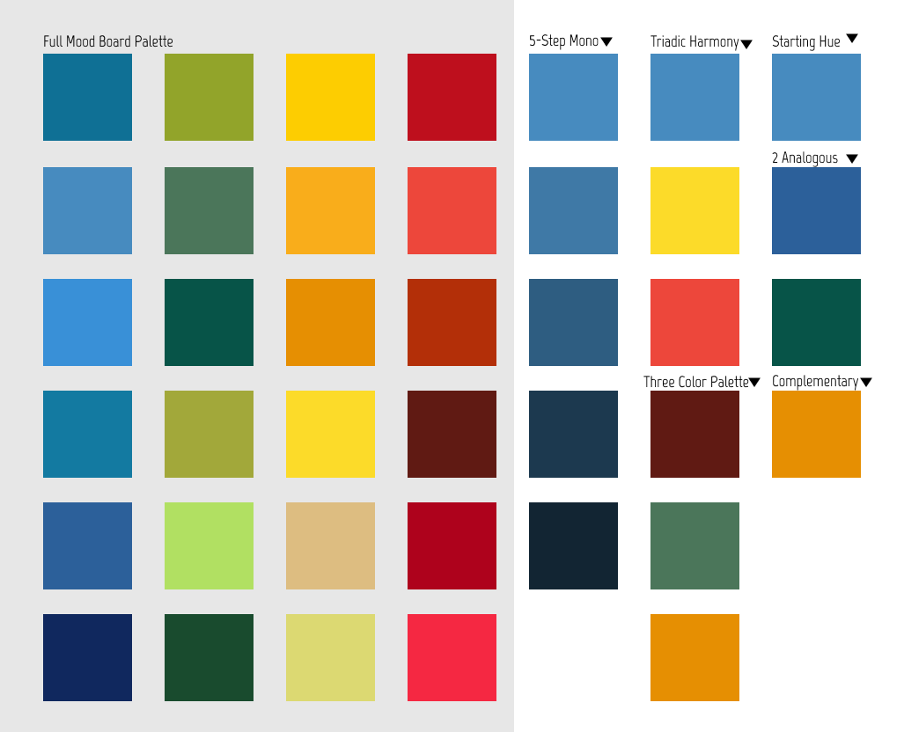
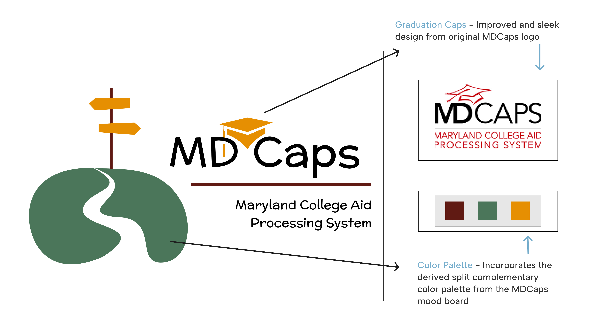
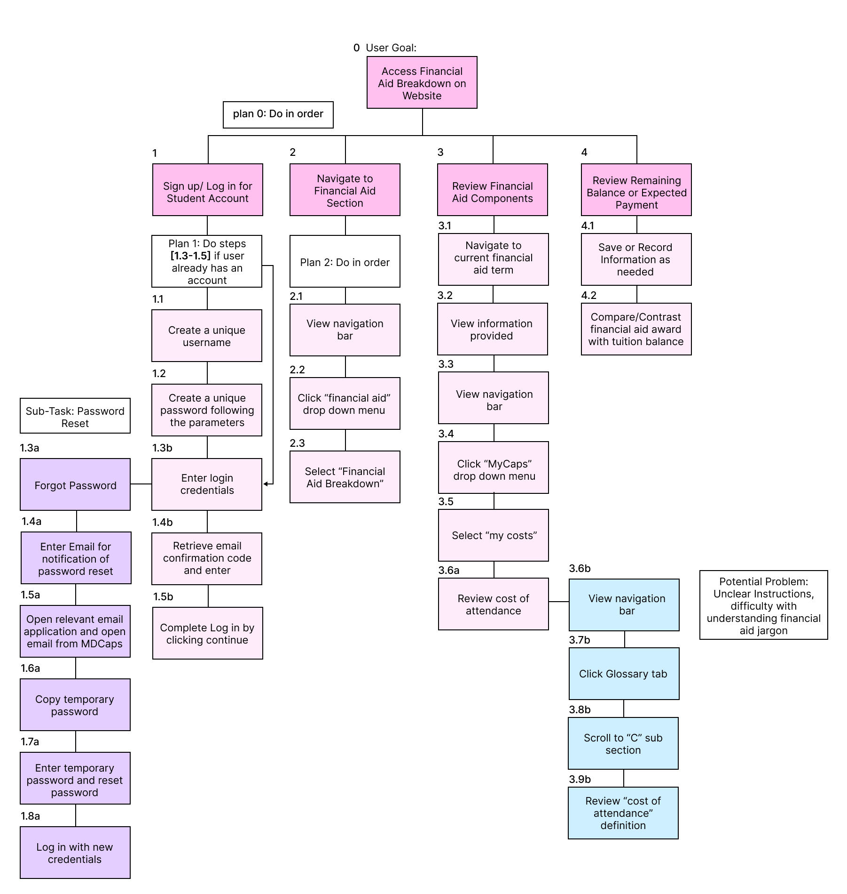
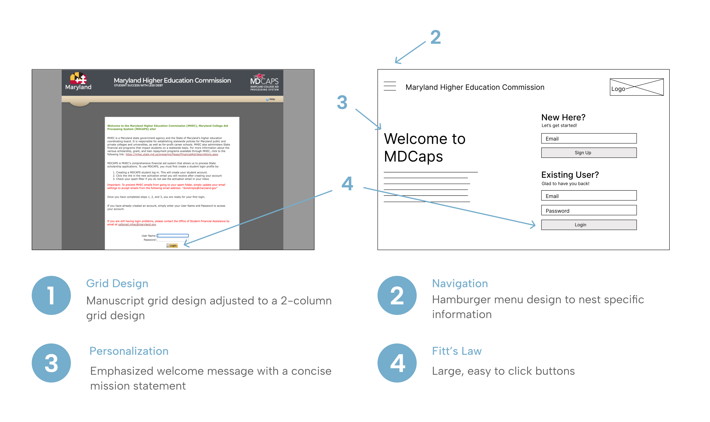
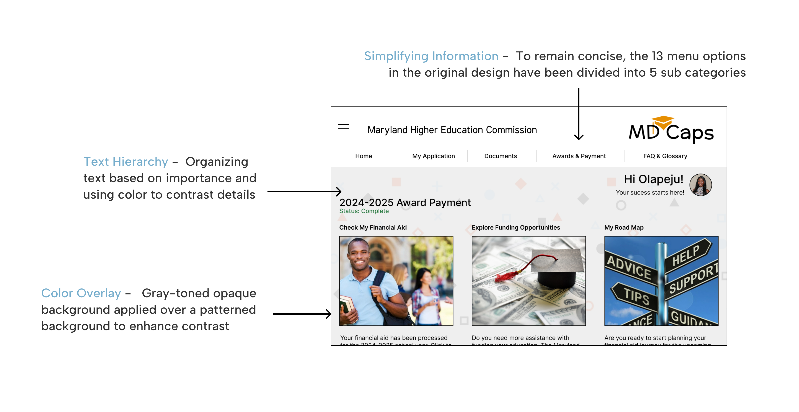
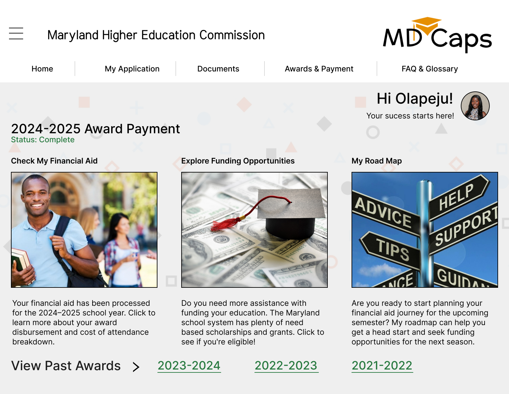
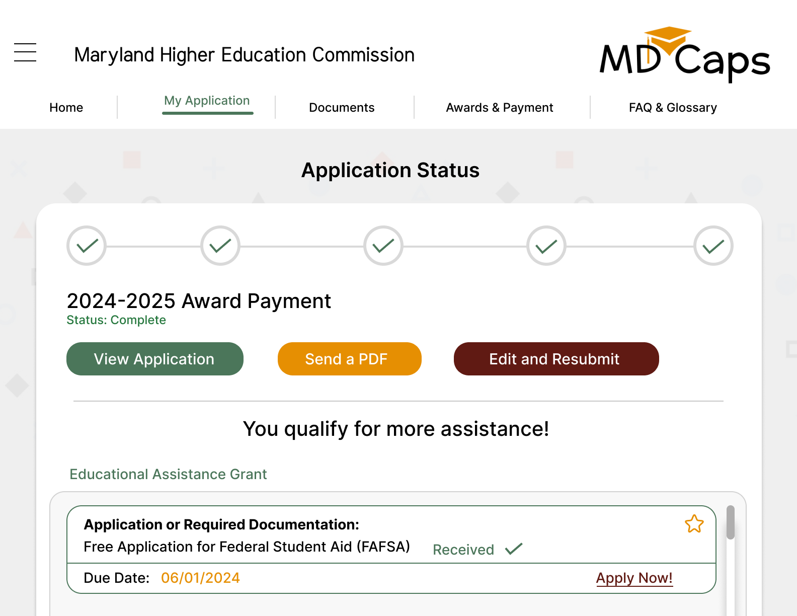
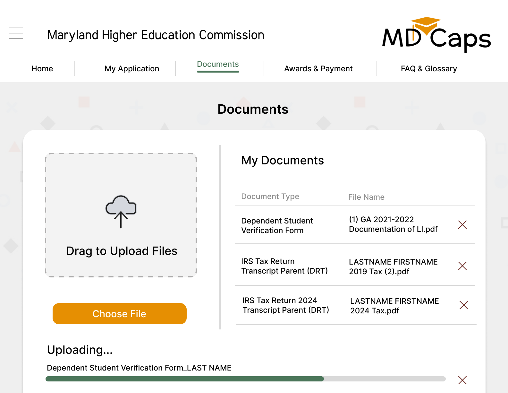
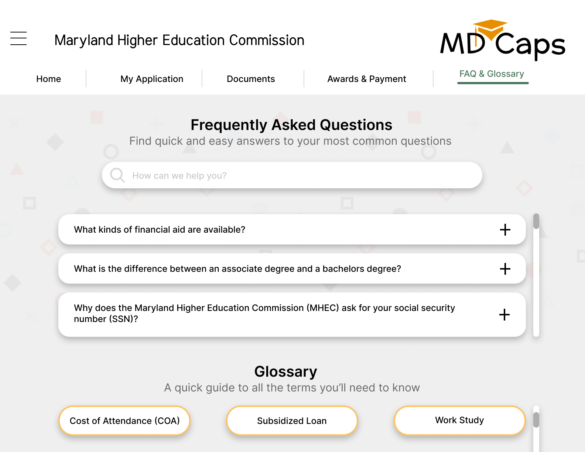

MDCAPS Redesign
Maryland Financial Aid Website Rebrand
Overview
MDCAPs is a website that allows Maryland College students to receive state scholarships and financial aid. To improve the usability, aesthetics, and overall product experience of the MDCAPS welcome page, I aimed to create a more user-friendly and visually engaging interface that aligns with the needs of Maryland college students.
Problem Statement
The current MDCAPS website feels overwhelming, with too much text and a layout that makes it hard for students to find what they need quickly. Important actions like logging in or checking financial aid are buried, and the design doesn't make it easy to navigate or use.
Audience
Maryland college students seeking scholarships and financial aid, including transfer students from diverse backgrounds.
Role
Product researcher
Product designer
Tools Used
Figma
Duration
September 2024 - December 2024
What Inspired the MDCaps Redesign?
The Origin Story
My redesign of the MDCaps website began when I was tasked with identifying a website design that I "strongly disliked" for my Human-Centered Computing class: "Graphic Design for Interactive Systems". Conveniently, I had visited the MDCaps website the prior week and remembered many issues I faced during my user journey.
Design Ideation
Understanding the Purpose of the Redesigns
Pain Points
The MDCaps website presents several usability challenges that hinder a smooth product experience. The cluttered navigation menus can overwhelm users with too many options, making it difficult to locate specific features or information efficiently. Additionally, the lack of intuitive design creates difficulties with the navigation, especially for users unfamiliar with the website.
- Cluttered interface
- Poor mobile optimization
- Generic messages
- Technical jargon
- Hard to find features
- Overly complex menus
Design Goals
While conducting user research, I found that the MDCaps mission statement emphasizes making users feel welcomed and confident as they navigate the financial aid process. My main goal for the redesign is to align closely with this mission through my design choices while enhancing it in a modern way.
Mood Board
Unifying Design Choices


Color Palette
Unifying Design Choices
Design Goals
Using a color picker tool, I derived 24 colors that capture the most prominent hues from the mood board. I then grouped the colors into sets based on their relationship on the color wheel, such as analogous, complementary, and triadic. From the sets defined I chose three colors that resonate closely to my redesign goals.
Divergent - Convergent Thinking
Brainstorming & Refining
Rapid Iteration
Before starting any user interface redesigns, I wanted to clearly define the design goals for my redesign through the logo. Drawing inspiration from the current logo and themes that resonated with the MDCaps brand, I sketched five designs in black and white. This process began by listing five words that represented the MDCaps brand, then branching off into 10 variations for each until I created a list of 50 terms. From these, I applied convergent thinking to narrow it down to the five terms that best represented the brand and illustrated an icon for each.
Final Logo Design
Retouched with Color Added

Crafting Inclusive User Personas
User Research
Characteristics of MDCaps Users
MDCaps users are primarily students, parents, and educators navigating the financial aid process for higher education in Maryland. They are often tech-savvy and have a strong understanding of the financial aid process.
Age
Users age 16+
Traits
Expectations
MDCaps users want a simple, reliable platform that works smoothly on all devices. They look for clear guidance, timely updates, and quick help when needed.
Meet Sophia Martinez
First-Year Masters Student
"As a first-year grad student, I've done this before...but now I need quick, clear info that's actually made for someone like me."
Demographics
Age: 22
Hometown: Silver Spring, Maryland
Education: M.S in Graphic Design
Family: Single, lives at home
Goals
Behavioral Traits
Needs
Sophia is juggling school, work, and life, so she needs a financial aid website that's easy to use and gives her the info she needs without any hassle. As a grad student, she already knows the basics of financial aid but needs help finding grad-specific opportunities.
Experiences
Sophia has experience filling out financial aid forms from her undergraduate studies, which gives her some familiarity with the process. However, navigating financial aid for graduate school feels different and more complex, with new requirements and different types of funding she hasn't encountered before.
Meet Greg Newman
Auto Mechanic, Self-Employed
"I'm not the most tech-savvy, so I need things to be simple and clear. If I can understand it the first time, I'm way more likely to stick with it."
Demographics
Age: 56
Hometown: Mc Lean, Virginia
Education: Vocational Degree
Family: Married with three kids
Goals
Behavioral Traits
Needs
Greg hasn't had much experience with technology in a learning setting as he finished his high school diploma during a time when technology was not implemented in schools and he completed his certificate for Auto mechanics in trade school.
Experiences
Greg has minimal experience with technology, largely because he prefers to dedicate his time to perfecting his craft as an auto mechanic. His work is hands-on and practical, so he hasn't had much need or interest in using digital tools beyond what's necessary for his business.
User Journey Map
Understanding User Goals
Sign up/Log in for a student account
Navigate to financial aid section
Review financial aid components
Review remaining balance or expected payment

Digital Wire Frame
Login Page: Original vs. Redesign

Landing Page
High - Fidelity Final Prototype

Final Prototype
5 Interactive Pages
Solution Overview
The redesigned website focuses on the top reasons students visit which are checking application status, uploading documents, exploring funding options, and learning how to use the site. Special attention was given to the welcome page, as it sets the tone for the product experience.
Skills Used
Reflection
During the redesign of the MDCAPS website, I developed a strong foundation in color theory and its relevance to enhancing the overall aesthetic of the website, as well as effectively utilizing the surface area of a desktop layout. I learned how to strategically reduce clutter by using navigation menus and nesting information within help menus, allowing users to have greater control over the information presented to them at any given time.
Final Prototype: All Pages
4 Interactive Pages




More Projects
Check out my other work